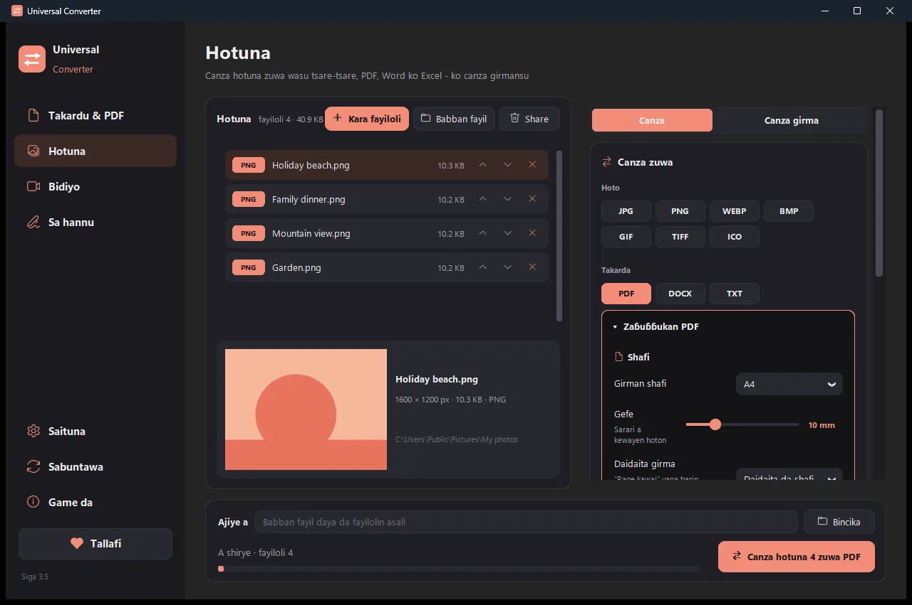
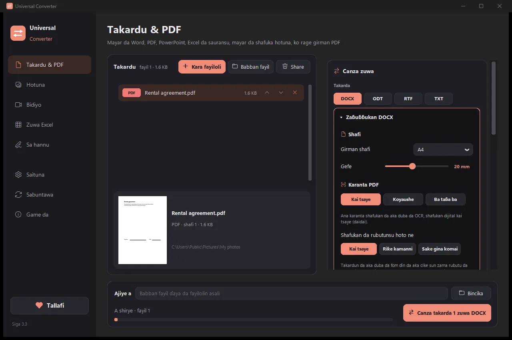
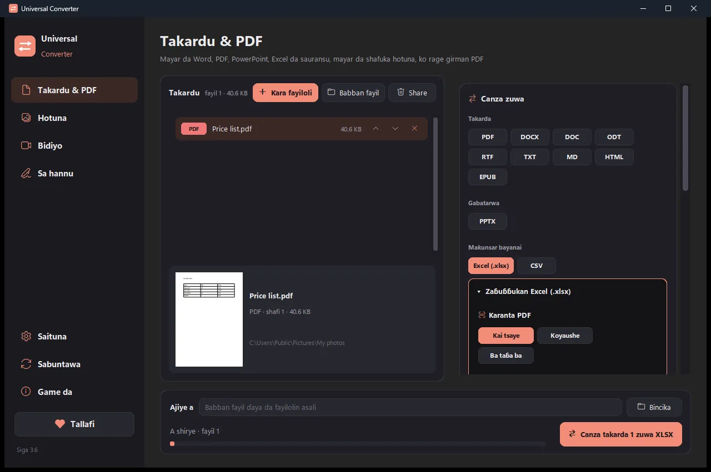
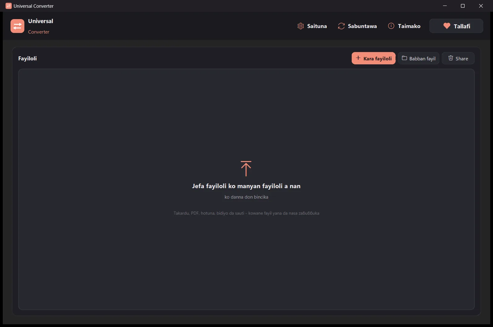

Canza fayilolinka a na'urarka
Hotuna, takardu, bidiyo da sauti, PDF da teburi zuwa Excel, duka a manhaja ɗaya. Ba a loda komai ba: fayilolinka ba sa taɓa barin na'urarka.
Yadda ake shigarwa da sabuntawa
- Buɗe .dmg da ka sauke kuma ka ja Universal Converter zuwa Applications.
- Buɗe manhajar. A karon farko macOS zai toshe ta saboda Apple bai sa mata hannu ba: danna Done.
- Buɗe System Settings > Privacy & Security, gungura ƙasa, danna Open Anyway kuma ka shigar da kalmar sirrinka. Sau ɗaya kawai za ka yi haka.
Sabuntawa: idan ka ba da izini lokacin da manhajar ta fara buɗewa, tana duba sababbin siga duk lokacin da ta fara, tana tabbatar da sa hannunsu na dijital kuma tana shigar da su lokacin da ka zaɓa.
Yadda ake shigarwa da sabuntawa
- Danna “Sauke don Android” a wayarka.
- Buɗe fayil ɗin da aka sauke. Idan Android ta tambaya, ba wa burauzarka ko mai sarrafa fayil izinin shigar da manhajoji.
- Danna Install.
Sabuntawa: manhajar tana dubawa kusan sau ɗaya a rana kuma tana gaya maka idan sabuwar siga ta shirya. Sauke ta haka nan kuma ka shigar da ita a kan tsohuwar; ana kiyaye saitunanka.
Yadda ake shigarwa da sabuntawa
- Sauke fayil ɗin .AppImage.
- Mayar da shi mai iya gudana: danna dama, buɗe Properties > Permissions ka ba shi izinin gudana a matsayin shiri (ko a terminal: chmod +x Universal-Converter-*.AppImage).
- Danna shi sau biyu. Ba a saka komai ba: manhajar ita ce wannan fayil ɗaya.
Sabuntawa: idan ka yarda a karon farko da manhajar ta buɗe, tana neman sabbin siga duk lokacin da ta fara, tana tabbatar da sa hannunsu na dijital, kuma tana maye gurbin fayil ɗin AppImage a inda yake.

Na sirri
Komai yana gudana a na'urarka. Babu lodawa, babu jira a layi, babu iyakar girma.
Kyauta
Kyauta don amfani, babu talla, babu asusu kuma babu alamar ruwa.
Harsuna 34
Hausa, Turanci, Girkanci, Sifaniyanci, Italiyanci, Jamusanci, Faransanci, Fotugalanci (Fotugal da Brazil), Polanci, Rashanci, Larabci, Ibrananci, Sinanci, Japananci, Koriyanci, Tamil, Afrikaans, Yarbanci, Hindi, Indonesiyanci, Turkanci, harshen Vietnam, Suwidiyanci, Holandanci, Danishanci, Ukraniyanci, Cek, Romaniyanci, Bulgariyanci, Norwayanci, Malay, Filipino da Swahili.
Kayan aiki biyar a taga ɗaya

Takardu & PDF
Canzawa tsakanin PDF, Word, ODT, RTF, TXT, Markdown, HTML, EPUB, PowerPoint da Excel. Mayar da shafuka zuwa hotuna kuma ka haɗa fayiloli da yawa zuwa PDF ɗaya. Ana kiyaye haruffan rubutu, girma da launuka. Rage girman PDF zuwa girman da ka zaɓa. Takardun da aka duba da fom ɗin da aka cike sun zama rubutu da teburori da za ka iya gyarawa, an tsara su kamar shafin. Tebura, ko da babu layuka kamar a bayanan asusun banki, suna shiga Word a matsayin tebura na gaske, kuma tsofaffin fayilolin Word (.doc) da PowerPoint (.ppt) suna buɗewa.
Hotuna
Canzawa tsakanin JPG, PNG, WEBP, TIFF, BMP, GIF da ICO. Canza girma ta pixel, kashi ko girman fayil, haɗa hotuna zuwa fayil ɗin PDF ko Word, kuma karanta rubutun da ke cikin hotuna (OCR). Ana iya ƙara PDF ma: kowane shafi zai zama hoto.

Bidiyo
Canza bidiyo tsakanin MP4, MKV, WebM, MOV da AVI, kuma ka matse su da AV1, H.265, H.264 ko VP9. Gajarta, yanke, juya da canza girma, yi GIF, ajiye firam a matsayin hotuna, ko ka riƙe sauti kawai a matsayin MP3, M4A, AAC, FLAC, WAV, AIFF, OGG, AC-3, MP2, WavPack, MKA, CAF ko Opus. Idan bidiyo sun yi yawa, kowanne zai iya samun saitunansa. A Android: MP4, MKV, WebM, MOV ko GIF, ko sauti kawai a matsayin MP3, M4A, AAC, OGG, Opus, FLAC, WAV, AIFF ko MKA; gajarta, yanke, juya, canza girma da ajiye firam.

Excel
Fitar da teburi daga PDF, takardun da aka duba da hotuna zuwa Excel ko CSV: bayanan banki, takardun kuɗi, jerin farashi. Yana karanta Hausa, English, Girkanci da sauran harsuna fiye da 30.

Sa hannu
Sa hannu a kan PDF kuma cike fom. Rubuta sunanka a salon rubutun hannu, zana sa hannunka ko yi amfani da hotonsa. Manhajar tana nemo layukan sa hannu da kanta, ko ka danna ko ka taɓa inda sa hannu, baƙaƙe, kwanan wata, rubutu ko alamomi za su tafi. Sa hannu a fayiloli da yawa lokaci ɗaya; na asali ba sa canzawa.
- Yana amfani da katin zanenka don bidiyo idan zai iya: yawanci ya fi sauri sau 5 zuwa 20.
- Ja dukan manyan fayiloli ciki: ana canza kowane fayil a lokaci ɗaya.
- Allo ɗaya don kowane fayil: ƙara takardu, hotuna da bidiyo tare, kuma kowanne yana da nasa zaɓuɓɓuka.
- Yana gaya maka game da sababbin siga; a Windows, Mac da Linux zai iya shigar maka da su, bayan an tabbatar da su ta hanyar dijital.
- Kamanni mai haske da mai duhu, don dacewa da na'urarka.
Yadda yake aiki
- Buɗe Universal Converter.
- Ja fayilolinka ko dukan babban fayil cikin taga, ko danna “Ƙara fayiloli”.
- Danna “Canza”. Ana ajiye sababbin fayiloli kusa da na asali, ko a babban fayil ɗin da ka zaɓa.

Abin da zai iya yi
- Canza PDF zuwa Word
- Canza takardun Word zuwa PDF
- Haɗa fayiloli da yawa zuwa PDF ɗaya
- Matse PDF zuwa girman da ka zaɓa
- Matse PDF zuwa 100 KB, 200 KB ko kowane girma da fom na kan layi ke buƙata
- Canza shafukan PDF zuwa hotunan JPG
- Mayar da takardar da aka duba zuwa fayil ɗin Word da za a iya gyarawa
- Canza hotuna tsakanin JPG, PNG, WEBP da ƙari
- Canza girman hotuna ko rage su zuwa girman fayil
- Canza girman hoto ko sa hannu zuwa 20 KB, 50 KB ko ainihin pixel
- Haɗa hotuna zuwa PDF ɗaya
- JPG zuwa PDF ƙasa da 100 KB
- Kwafi rubutu daga hoto (OCR)
- Matse bidiyo ba tare da loda shi ba
- Canza bidiyo tsakanin MP4, MKV, WebM, MOV da AVI
- Ajiye sautin bidiyo a matsayin MP3
- Yi GIF daga bidiyo
- Fitar da teburi daga PDF zuwa Excel
- Canza PDF na bayanan banki zuwa Excel
- Fitar da teburi daga takardun kuɗi na PDF zuwa Excel
- Sa hannu a kan PDF
- Cike fom na PDF
Tambayoyi
Da gaske kyauta ne?
Ee. Universal Converter kyauta ne don amfani, babu talla, babu asusu kuma babu iyakar lokaci. Idan yana taimaka maka, za ka iya tallafa wa ci gabansa da gudummawa ta son rai, amma ba dole ba ne ko kaɗan.
Ana loda fayilolina zuwa wani wuri?
A'a. Kowane canji yana faruwa a na'urarka, don haka yana aiki ko da babu intanet. Manhajar tana shiga intanet ne kawai don duba sabuntawa, don sauke haruffan gane rubutu da ka zaɓa kuma, idan ka ba da izini, don aika rahoton kurakurai ba tare da suna ba.
Shin saukewa lafiya ce?
Eh. Kafin su zo wannan shafin, ana duba fayilolin saukewa na Windows, Mac, Linux da Android na kowace siga da injunan riga-kafi kusan 60–70 a VirusTotal; mahaɗin da ke ƙarƙashin kowane maɓallin saukewa yana buɗe rahoton wannan fayil. Manhajar ba ta nuna talla kuma ba ta tattara bayanan sirri, kuma Microsoft ma tana dubawa tana sa hannu a sigar Microsoft Store.
Windows tana nuna gargaɗin SmartScreen. Shin wannan al'ada ce?
Ee. Ba a sa wa mai shigarwa hannu da takardar shaidar lamba ba tukuna, don haka Windows ba ta gane shi ba. Zaɓi "More info" sannan "Run anyway". Bayan haka manhajar kanta ce ke tabbatar da sabuntawa ta hanyar dijital. Ko ka shigar da shi daga Microsoft Store, wanda ba ya nuna gargaɗi.
Yaya zan buɗe shi a Mac?
Buɗe fayil ɗin da ka sauke kuma ka ja Universal Converter zuwa Applications. Apple bai sa wa manhajar hannu ba, don haka a karon farko da ka buɗe ta macOS zai toshe ta: danna Done, sannan ka buɗe System Settings > Privacy & Security, danna "Open Anyway" kuma ka shigar da kalmar sirrinka. Sau ɗaya kawai za ka yi haka.
Yaya zan shigar da shi a Android?
Sauke APK a wayarka, buɗe shi kuma ka ba da izinin shigarwa idan an tambaya (Android 10 ko sabuwa). Duk harsuna 34 suna ciki; zaɓi ɗaya a Saitunan manhajar. Manhajar tana gaya maka idan akwai sabuwar siga.
Waɗanne harsuna yake magana?
Manhajar tana cikin Hausa, Turanci, Girkanci, Sifaniyanci, Italiyanci, Jamusanci, Faransanci, Fotugalanci (Fotugal da Brazil), Polanci, Rashanci, Larabci, Ibrananci, Sinanci, Japananci, Koriyanci, Tamil, Afrikaans, Yarbanci, Hindi, Indonesiyanci, Turkanci, harshen Vietnam, Suwidiyanci, Holandanci, Danishanci, Ukraniyanci, Cek, Romaniyanci, Bulgariyanci, Norwayanci, Malay, Filipino da Swahili. Kana zaɓa a cikin mai shigarwa, ko daga baya a Saituna.